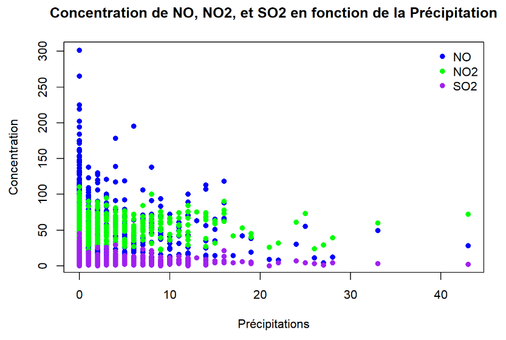

Portfolio de Harold TAGNY
Bienvenue sur mon portfolio. Je vous présente mes différents projets effectués ces dernières années au cours de ma formation en Sciences des Données, qui me conduit au métier de Data Analyst. Les données sont le nouvel or (digital) de la génération dans laquelle nous vivons aujourd'hui. Elles permettent de se faciliter la vie de bien des manières, à travers le suivi de plusieurs indicateurs, mais également de visualiser les performances ou les actions effectuées ainsi que leurs impacts.
En tant que Data Analyst, j'exerce une fonction de support aux entreprises afin de pouvoir les aider dans la prise de décision à plusieurs niveaux.
Années : 2021 - 2024

Principaux projets réalisés ;
Logiciels : Excel, PowerPoint
- La création des données.
- Le traitement des données.
- L'exploitation des données.
- La restitution des données (en DataVisualisation).
- Traiter des données à des fins décisionnelles et ce en intervenant à toutes les étapes de vie de la donnée.

Pour la partie Bivariée (où j'ai comparé les personnes ayant effectuer une alternance ou non) :
Concernant la conclusion du projet :
Pour conclure le projet, nous avons pu observer différentes conclusions à travers les données :
- Le salaire dépend de la formation de base (Alternance ou Initial).
- L'évolution salariale dépend de la formation de base.
- L'évolution salariale dépend du niveau d'études.
- La formation de base n'influe pas sur la vitesse de recrutement.
- La formation n'a pas d'influence sur le nombre de postes occupés.
C'est également grâce à ce projet que j'ai pu comprendre et appréhender la création de la donnée jusqu'à la restitution de cette donnée en datavisualisation afin de pouvoir mener des études. C'est également l'un des projet qui m'a le plus marqué car il m'a poussé à choisir l'alternance par la suite. J'ai également appris des remarques des premiers graphiques que j'ai pu effectuer (notamment de les passer en pourcentage et non de les laisser en numérique.)
Dates : Septembre 2021 - Janvier 2022
Logiciels : Kaggle , SQL, Power BI, PowerPoint

Points par joueurs :

Points par équipe :

Conclusion :

Vous pouvez retrouver l'étude sous le lien ci-dessous :
Dates : Janvier 2023 - Mars 2023
Logiciels : SAS, SQL, SpotFire, PowerPoint, Excel, Power BI, IBM Notes, RStudio.


Le fait d'avoir participer à ce projet me rend confiant vis à vis de mes capacités et en mes réalisations dans le domaine de la Data. J'ai également par ailleurs traîter des demandes ponctuelles notamment le suivi de différentes campagnes de prospection. J'ai également pu effectuer un tableau de bord reprenant les KPI du CRM (Customer Relationship Management) de l'entreprise.
Les challenges poussant les différents collaborateurs des différentes équipes (entreprises, particuliers, artisans) étaient également codés par mes soins. Il est dans ces cas là alors question de prendre les demandes des pilotes de marchés en compte afin de structuré le code pour classer les collaborateurs. Dans une dynamique de challenge entre eux, tout est mis en place afin qu'ils soient poussés à performer sur leurs objectifs. Il y en a environ deux par marchés et par années.
Grâce à l'alternance, aujourd'hui j'ai décidé de ma future orientation et c'est en école d'ingénieur que je me dirige actuellement. J'ai également grâce au groupe Pro BTP pu développer mes compétences en relationnel, en codage, en rythme de travail, en organisation (du fait de l'alternance), mais encore de persévérance, de compréhension métier et plus encore...
J'ai par conséquent acquis une expérience qui me sera certainement profitable et précieuse pour les années à venir. Concernant les compétences acquises lors de cette partie de ma formation, j'ai notamment pu mettre en valeur des productions dans un contexte professionnel.
1 - En s'adaptant au niveau d'expertise, au statut et à la culture des destinataires.
2 - En veillant à respecter les normes éthiques, déontologiques et réglementaires sur la diffusion des données.
3 - J'ai également pris en compte l'importance de contextualiser les données.
4 - La restitution a également pris en compte une documentation afin d'expliquer la démarche suivie de manière explicite et également la structuration du tableau de bord.
5 - Le tout a été effectuer grâce à des datavisualisations précises et qui permettaient de comprendre les informations et résultats clés.
Durant mon alternance, j'ai donc pu acquérir différentes compétences qui m'ont permis d'évoluer tout au long. Mes principales missions étaient les suivantes :
- Aide au pilotage des performances du réseau commercial à travers la création, la maintenance ainsi que l'évolution des tableaux de bords.
- Analyse des résultats commerciaux afin d'apporter une aide à la décision.
- Exploitation des données via SAS/SQL afin de les structurer pour les tranformer pour des fins opérationnelles et décisionnelles.
- Analyse Ad Hoc permettant de faire ressortir des points précis selon les demandes des collaborateurs.
Dates : Septembre 2022 - Septembre 2024
Logiciels : RStudio, RMarkdown, Excel
Méthodes : Ciblage, Modélisation Linéaire, Boosting
Le projet était par conséquent divisé en plusieurs étapes :
Dates : Octobre 2023 - Décembre 2023
Logiciels : RStudio, RMarkdown, Word
Le Voxelotor a donc été tester dans différentes circonstances notamment face à un placebo (objectif principal afin de déterminer son efficacité), mais également en fonction de sous-groupes crées. La comparaison s'est par exemple faite sur l'âge (adulte & adolescents) ou bien encore les antécédents médicaux (crises-cavo-occlusives)...
C'est donc bien un médicament efficace dans l'augmentation du taux d'hémoglobine chez les patients atteints de drépanocytose.
Le rapport final est ci-joint ;
Dates : Décembre 2023 - Février 2024
Logiciels : RStudio - librairies (VSURF, randomForest, randomForestExplainer, pdp), RMarkdown

- L'axe des X correspond à la profondeur minimale dans l'ensemble de données.
- L'axe des Y correspond à la propostion des observations qui ont une profondeur minimale égale à chaque valeur de X.
Autrement dit, plus la profondeur de l'ensemble des données est petite, plus la variable est significative et agit sur notre variable cible qui est ici le PM10. Vous pouvez retrouver le projet ci dessous :
Dates : Fevrier 2024 - Mars 2024